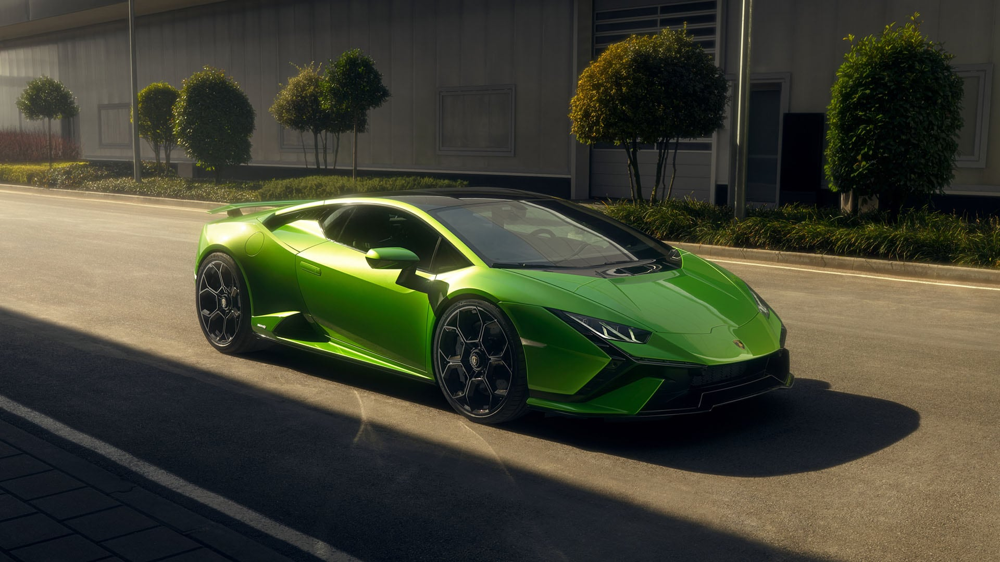
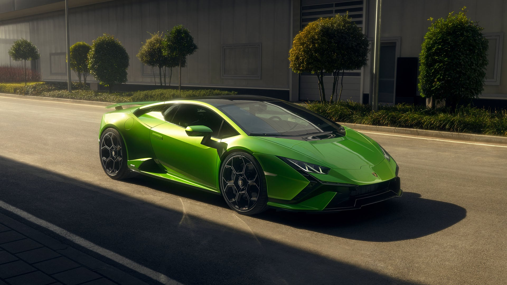

Tesla was founded in 2003 by a group of engineers who wanted to prove that people didn’t need to compromise to drive electric – that electric vehicles can be better, quicker and more fun to drive than gasoline cars. Today, Tesla builds not only all-electric vehicles but also infinitely scalable clean energy generation and storage products. Tesla believes the faster the world stops relying on fossil fuels and moves towards a zero-emission future, the better.
Launched in 2008, the Roadster unveiled Tesla’s cutting-edge battery technology and electric powertrain. From there, Tesla designed the world’s first ever premium all-electric sedan from the ground up – Model S – which has become the best car in its class in every category. Combining safety, performance, and efficiency, Model S has reset the world’s expectations for the car of the 21st century with the longest range of any electric vehicle, over-the-air software updates that make it better over time, and a record 0-60 mph acceleration time of 2.28 seconds as measured by Motor Trend. In 2015, Tesla expanded its product line with Model X, the safest, quickest and most capable sport utility vehicle in history that holds 5-star safety ratings across every category from the National Highway Traffic Safety Administration. Completing CEO Elon Musk’s “Secret Master Plan,” in 2016, Tesla introduced Model 3, a low-priced, high-volume electric vehicle that began production in 2017. Soon after, Tesla unveiled the safest, most comfortable truck ever – Tesla Semi – which is designed to save owners at least $200,000 over a million miles based on fuel costs alone. In 2019, Tesla unveiled Model Y, a mid-size SUV, with seating for up to seven, and Cybertruck, which will have better utility than a traditional truck and more performance than a sports car.
Tesla vehicles are produced at its factory in Fremont, California, and Gigafactory Shanghai. To achieve our goal of having the safest factories in the world, Tesla is taking a proactive approach to safety, requiring production employees to participate in a multi-day training program before ever setting foot on the factory floor. From there, Tesla continues to provide on-the-job training and track performance daily so that improvements can be made quickly. The result is that Tesla’s safety rate continues to improve while production ramps.
To create an entire sustainable energy ecosystem, Tesla also manufactures a unique set of energy solutions, Powerwall, Powerpack and Solar Roof, enabling homeowners, businesses, and utilities to manage renewable energy generation, storage, and consumption. Supporting Tesla’s automotive and energy products is Gigafactory 1 – a facility designed to significantly reduce battery cell costs. By bringing cell production in-house, Tesla manufactures batteries at the volumes required to meet production goals, while creating thousands of jobs.
And this is just the beginning. With Tesla building its most affordable car yet, Tesla continues to make products accessible and affordable to more and more people, ultimately accelerating the advent of clean transport and clean energy production. Electric cars, batteries, and renewable energy generation and storage already exist independently, but when combined, they become even more powerful – that’s the future we want.
 

Avarage Price
$99,900 model model model model
model model model modelThe top 10 automobile companies in the world are expected to grow exponentially owing to recovery
of the economy around the world coupled with increased demand from developing economies like
India, China, Brazil, and Malaysia. The global automobile market was valued at around
$1,400 billion in 2017 and is estimated to expand at a CAGR of more 3% for the next five
years to surpass $1,650 billion by the end of 2022. The top 10 car companies in the world are
geared to step up their production capacities as it is forecasted that the sales volume of
passenger cars will grow significantly from the 78 million units in 2017 to cross past the
100 million units mark within the next few years